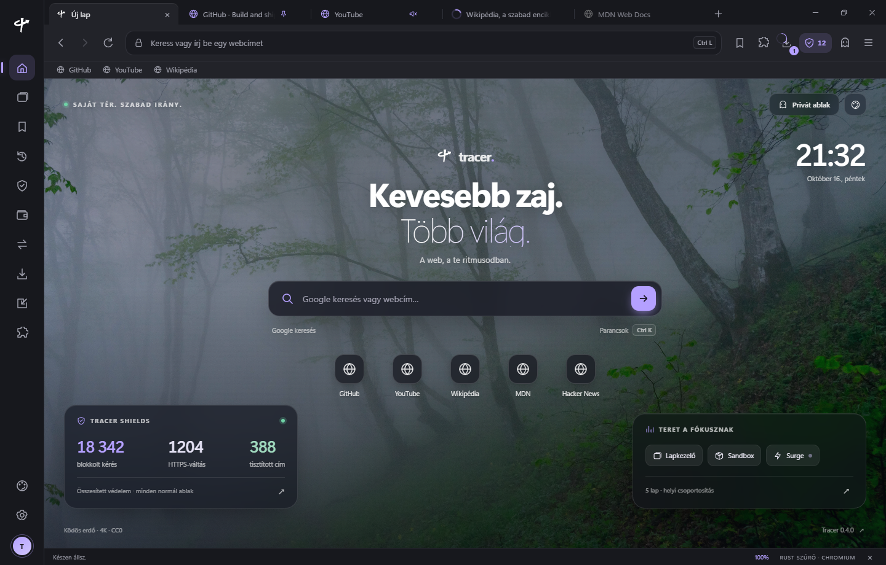

01
Védelem az első kattintástól.
A Shields alapból szűri az ismert reklám- és követőkéréseket. A védelem webhelyenként kézben tartható.
Ismerd meg a ShieldstA web a te ritmusodban. Beépített védelem, nyugodt kezdőlap és egy böngésző, amelyben otthon vagy.
Tracer letöltése Ingyenes. Saját tér. Szabad irány.
Kevesebb zavaró részlet. Több figyelem arra, amiért érkeztél. A Tracer a mindennapi böngészést teszi személyesebbé.
A Shields alapból szűri az ismert reklám- és követőkéréseket. A védelem webhelyenként kézben tartható.
Ismerd meg a Shieldst17 paletta, rendszertéma, 14 kiemelőszín és saját háttérkép. Egy munkanap, egy este, egy teljesen más világ.
Nézd meg a lehetőségeketParancspaletta, lapcsoportosítás, rögzítés és altatás. Folytasd ott, ahol abbahagytad.
A Ghost bezárja a lapokat és üríti a böngészési adatokat. A könyvjelzőid és beállításaid megmaradnak.
Ctrl + Shift + DelA reklámvédelem a böngésző része. A Tracer szűri az ismert reklámhálózatokat és követőket, előnyben részesíti a HTTPS-t, és helyben mutatja meg, mi történik egy oldalon.
A szűrőlisták egy kattintással frissíthetők, és a védelem webhelyenként állítható.
Kapcsold be a védelmet a bemutatóban.
Szemléltető bemutató.
A ködös erdőtől a manga városig. Válassz hangulatot a bemutatóban, a Tracerben pedig alakítsd a teljes felületet magadra.
Válaszd ki az eszközöd. Az elérhető csomagok közvetlenül innen tölthetők le, előfizetés és regisztráció nélkül.
A teljes Tracer-élmény
a számítógépeden.
A kiadás adatai betöltés alatt.
Ellenőrzőösszeg · SHA-256 ↗Saját tér,
amikor úton vagy.
A mobilkiadás állapotát ellenőrizzük.
Ellenőrzőösszeg · SHA-256 ↗ Android telepítési útmutató ↗A következő fejezet
még készül.
Letölthető, Apple által aláírt kiadás még nincs.
A legfrissebb csomagadatok betöltése…
Telepítés után a Tracer beállításaiban válaszd az „Legyen a Tracer az alapértelmezett” lehetőséget. A rendszer saját ablakában véglegesítheted a választásod.
Teljesen megújult felület, sokkal több animációval – és mégis kevesebb háttérmunkával. A Tracer tétlenül nem dolgozik, így a laptopod akkuja is tovább bírja.
Windows alatt telepítsd a Tracert az innen letöltött telepítővel. A Tracer Beállítások paneljén kattints a „Legyen a Tracer az alapértelmezett” gombra, majd a Windows beállításaiban válaszd a Tracert a HTTP és HTTPS hivatkozásokhoz. Androidon a Tracer beállításaiból nyitható meg a rendszer böngészőválasztója. A választást mindig te véglegesíted.
Androidon indítsd el a zenét egy normál lapon, majd válts másik alkalmazásra vagy zárd le a kijelzőt. Az értesítésből szüneteltetheted és folytathatod; a lejátszó lap bezárása leállítja a zenét. A Beállítások „Háttérben lejátszás” kapcsolója alapból bekapcsolt. A webhely saját lejátszási és hozzáférési feltételei érvényesek.
A Shields alapból aktív: hálózati szabályokkal szűri az ismert reklám- és követőkéréseket, és célzott webhelyvédelmet is alkalmaz. A webhelyek, különösen a videószolgáltatók folyamatosan változnak, ezért minden reklám eltűnésére nincs garancia. Ha egy oldal hibásan működik, a védelmet webhelyenként módosíthatod.
A kompatibilis csomagokat Chrome Web Store-hivatkozással vagy mappából telepítheted, engedélyjóváhagyás után. Az Electron motor Chrome API-támogatása részleges; a Proton Pass jelenleg nem támogatott. A pontos kompatibilitási állapot itt olvasható.
A telepítő még nincs kódaláíró tanúsítvánnyal aláírva, ezért a SmartScreen ismeretlen kiadót jelezhet. A „További információ” majd a „Futtatás mindenképp” gombbal folytathatod; a letöltés ellenőrzőösszege a letöltési kártyán található. iPhone-ra és iPadre még nincs telepíthető kiadás.
Windows alatt a Tracer helyi Brave, Chrome és Edge profilokat, valamint kompatibilis exportfájlokat fogad. Az import előtt adattípusonként megtekintheted, mi kerül át. A bejelentkezési cookie-k és más böngészők titkosított jelszó-adatbázisai nem másolódnak át.
Lezárja a lapokat és letöltéseket, üríti a böngészőtárakat és helyi előzményeket. A könyvjelzők, megjelenési beállítások, saját háttérképek, titkosított fióktár és már lementett fájlok megmaradnak.